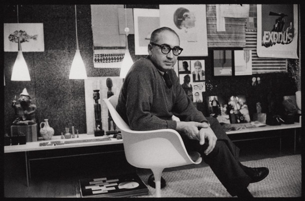
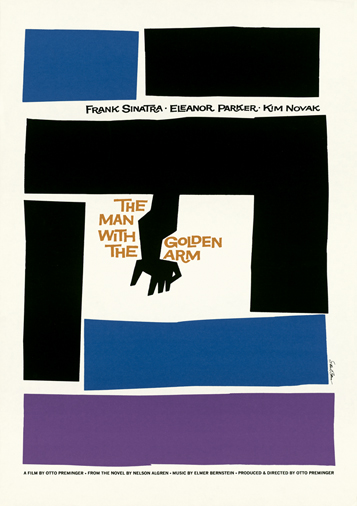
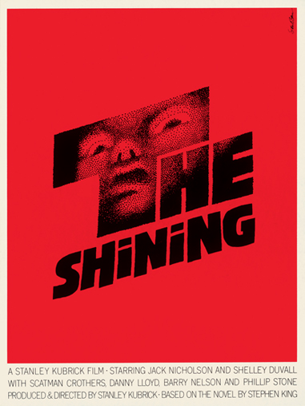
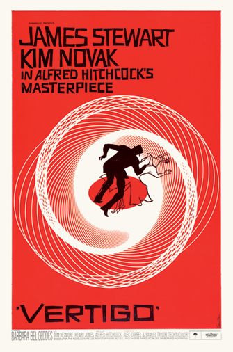
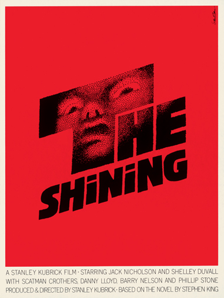
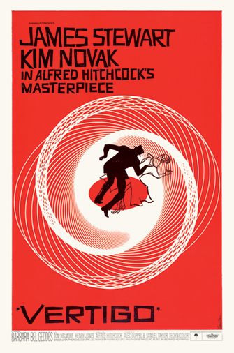
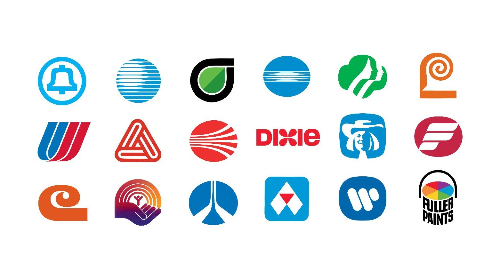
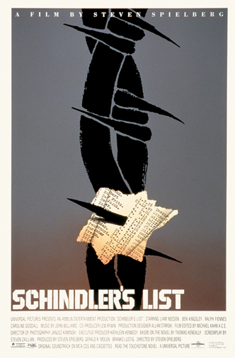

How did Saul Bass Impact Graphic Design?
Saul Bass’ infancy
Saul Bass was born in the Big Apple in 1920 to a Jewish family of immigrants. From the beginning it was very clear that Saul possessed a lot of creative talent as he was an avid sketcher and doodler from a very early age. At the young age of 15 he was already winning various awards for his art aswell as his drafmanship at his local college. He graduated from high school at age of 15. A little time after high school, Saul began to work as an entry level freelance designer which involved a lot of coffee making and grabbing essentials for his colleagues, rather than actual designing. However In 1936 Saul received a scholarship from the Arts Student League. He enrolled himself in a night course on “Layout and design for industry” taught by Howard Trafton at the college. The class was predominantly based on the principles of fine art but Trafton also taught students how to create commercial art aswell.
“If I wanted to come to grips with design, I had to understand the principles that made fine art work”Saul Bass
During this time Saul worked for various advertising agency and companies alike but he was quickly becoming bored and frustrated with work in New York. In 1944 Saul uncovered a book by Gyory Kerpes called “The language of Vision”. Saul discovered that Gyory was teaching in New York at the time so he enrolled in on of her courses. Gyory had studied at Bauhaus before the Nazis rose to power. Gyorys' knowledge of the Bauhaus design principles had taught Saul how to make his work more abstract and minimal. Soon after this Saul took up on a career opportunity that lead him to California.
To the west
In his 20s Saul pick up shop and moved to the West Coast to work for and advertising agency called Buchanan & Company which was the 5th biggest advertisement agency at the time. They looked after big clients in the film industry like Paramount Pictures.
“I decided that New York was very cold and very dull, I needed to warm up”Saul Bass
Saul moved to west to California for two main reasons.The first was that he had aspired to work within the movie industry and secondly he also believed that design within California was very primitive compared to other parts of the world. This made it a great place for Saul to make a name for himself through the use of his unorthodox style
The leader of Californian modernism
Saul amassed a large collection of work throughout his time working in California. His work included poster design, movie titles and later corporate logos. Essentially Saul was an autodidact with no proper training, he was purely self taught. Saul didn't go on to study the likes of graphic design at college as he was born amongst the great depression in America. This caused him to source employment instead of doing a degree. Saul however was a firm believer in doing something rather than merely attending a school.
“Design is a craft”Saul Bass
At the beginning of his Hollywood career Saul was somewhat burdened by the fact he did not have a degree. Hollywood considered him as not being intellectual enough to participate in discussions. In 1950 Saul became the executive art director for Buchanan and company who looked after the United Artists account. Saul helped to create advertisements and premiere invites for the Champion as well as advertisement work for “No Way Out” as well as a variety of other movies. Some of the directors like Mark Robson invited Saul back to do credits and titles for their film. As Saul was still an employee he did not mark his work with his brand like the likes of Paul Rand did at the time.
In 1951 Saul jumped ship from Buchanan and Company and moved to another company called Foote Cone and Belding. Saul was in charge of the the RKO account, which was a large movie studio company owned by the infamous Billionaire Howard Hughes. In 1952 Saul quit Foote due to an argument over his earnings and founded his own brand which he worked on from his home. When he required extra help he brought in the occasional freelancer as a helping hand. He earned a steady income from this.
Saul continued to work in advertisement in California until he was offered the job of designing a movie poster for the movie Carmen Jones (1954) directed by Otto Preminger. He took up on the offer and designed a poster for the film. He received a lot of good feedback from the likes of Otto Preminger, so much so that they asked if he would also design the credits for the film as well. This commission is what catapulted Saul into the limelight and put his work on show to the world. A lot of famous heads within Hollywood really wanted Saul Bass to collaborate with them after this. This included the likes of the all famous Alfred Hitchcock who hired Saul Bass as his visual consultant for Vertigo in 1958 which involved the creation of a title sequence and a poster. Other movie posters included The Man with the Golden Arm 1955, Storm Centre 1956 and The Anatomy of Murder 1959 to name a few.
 



In the 1960s Saul Bass moved into the cooperate branding side of things. He has made some of the most iconic logos in recent history, some of which are still around today. It all started with Alcoa which was an aluminum company that came to Saul Bass looking for a new corporate identity. Paul designed a logo for them which was very well received, so much so that the company still uses it 50 years after it was created. The work Bass did for Alcoa helped put the Bass brands foot through the door of cooperate branding in America. Saul went on to brand other companies like AT&T, United Airlines and Warner Corporations. Unlike movie branding which payed around $30000, these rebranding schemes were worth millions.
But Poster design was still something Bass had a real passion for so he still made posters up until the the last days of his career. This included movies like Schindler's List. The last poster he made was for the 1996 Oscars. He died soon after on the 26 of April 1996.
His Style
Jan-Christopher Hora referred to Saul Bass as “defining an era of art” which just shows how big of an impact Saul Bass had in defining graphic design within the 21st century. Saul Bass' style was extremely unorthodox as he liked to make use of iconography combined with the use of a narrative content, whilst maintaining a basic formality to his pieces of work. Saul style at heart was of a minimalistic approach that he had derived from the Swiss Design that he had been taught by Gyory Kerpes. His use of simple abstract shapes and colour to covey what the film was about was something that really defined him. An example of this would be The Shinning. What really defined Sauls style in the film industry was that he made use of graphics and kinetic type (moving text) to create movie credits that where just as interesting and conveying as any other part within the movie. He provided the audience with an inviting icebreaker to give them a feel for the movie. This was something that had not been done before, which was what made it so ground breaking for the time! This is one of his greatest achievments as the film industry today puts a massive effort into the styling of intros and credits within films. When asked who his big inspirations were, Saul said that his was Paul Rand. Rand was actually worried that Saul was copying him but Saul was just inspired by his work.
“I watched Paul Rand, 5 years my senior year, like a hawk”Saul Bass
It wasn't just his style that made Saul Bass work obscure and different it was also his ideologies and design philosophies. There were a couple of components that set him apart from his competitors in the film industry swell as other industries. Jan-Christopher Hora said “He was a graphic designer who created his own job description”.The film industry at the time was very heavily regulated as too who could do what, Saul Bass broke this trend by taking the mandatory job role and throwing it in the trash and created his own job role that included what he wanted to do. Another key thing to note is that Saul brought a level of high class art into the movie industry that had never been seen before, which was very unorthodox for such a regulated industry. The film industry was very clinical and Saul changed that through the injection of fine art into the industry. Something that also helped Sauls creativity process was to surrounded himself with people who were independent thinkers. He did this as they could think outside of the box instead of conforming to the industry standards. These three simple things are what separated Saul Bass from the status quo in the industry and defined himself as a pioneer within the industry.
“No one else had his style”Jan-Christopher Hora
His Impact on Graphic Design
Saul Bass was an an extremely influential forerunner for creating Graphic design today as we know it. Saul Bass has been named as one of the most important designers in American. He helped create the “modern American style” that we see today. He has created some of the most iconic film posters, credits and corporate logos of the 21st century and thats why Saul Bass’ impact on Graphic design is something that cannot be questioned. He is an inspiration to many of todays designers.
“Work? It’s just serious play.”Saul Bass